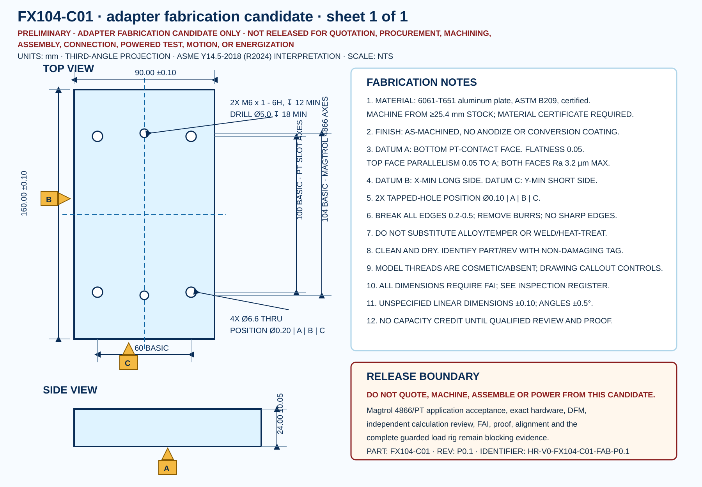

Certified ASTM B209 plate; machine from at least 25.4 mm stock.
Controlled design decision
FX104-C01 is a 90 x 160 x 24 mm adapter machined from certified ASTM B209 6061-T651 plate. It carries two M6 tapped axes at the Magtrol 4866 ±52 mm pattern and four Ø6.6 through axes at the PT ±50 mm slot pattern. Datum, surface, thread, position, edge and inspection requirements are explicit.
Inspect the exact candidate
Dimensioned drawing
The SVG is the human-readable control view; the STEP is nominal 3D geometry. Thread notes and tolerances control over cosmetic STEP threads.

Material and calculation basis
Nominal CAD mass at Kaiser's 2.70 g/cm³ density.
Three-times brake-weight moment screen.
Two-times X430 stall-endpoint torque screen.
Kaiser's 276 MPa yield value is typical. R105 uses 240 MPa only as a conservative project screen and requires the received material certificate; neither value is a released allowable.
What this closes—and what it does not
| Subject | R105 state | Boundary |
|---|---|---|
| Adapter material and geometry | Defined candidate | Certificate, DFM and qualified approval required. |
| Feature tolerances and inspection | Defined candidate | FAI remains unexecuted. |
| Adapter-only hand calculations | Screened | Independent calculation review and proof remain open. |
| Magtrol 4866 and PT hardware | Unresolved | Manufacturer files, hardware and application acceptance remain blocking. |
| Assembly and powered work | Prohibited | All release flags remain false. |
Release boundary
This is not a machining release.
The 4866 body model, PT T-nuts, exact fasteners, torque/preload, manufacturer acceptance, DFM, independent structural review, first-article inspection, proof, alignment and the complete guarded load rig remain unresolved. No supplier was contacted.
Evidence files
Design record · Feature register · Analysis register · Inspection plan · Hold register